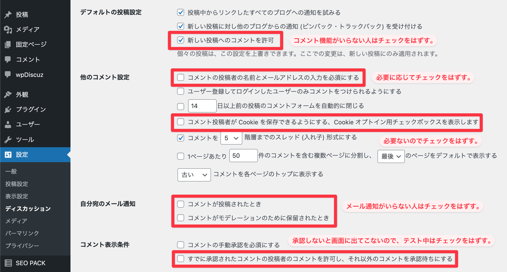
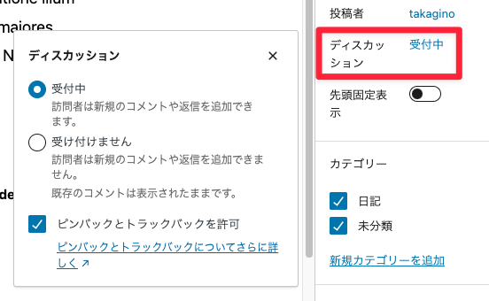
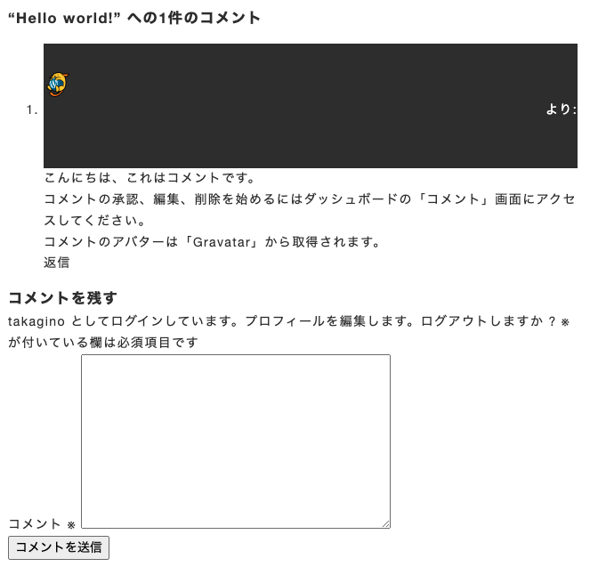
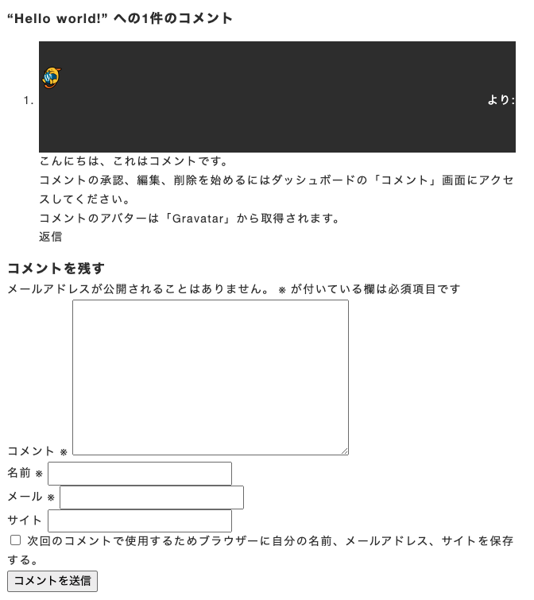
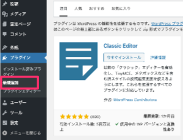
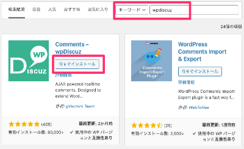

1. コメントの追加
コメントは設定が難しいので、無理に設置する必要はない。どうしても付けたい場合は、要素の検証をしながら地道にCSSを書くこと。
- 【管理画面での設定】
-
- 『管理画面メニュー > 設定 > ディスカッション』を選択。
- 必要に応じて設定を変更。

※記事ごとに設定もでき、サンプル記事によっては表示されない場合があるので注意。

1-1. ディフォルトのコメント機能の追加
- エディタで「single.php」を開く
- 記事内容とページ送りの間に、以下のテンプレートタグを追加する（WordPressループ内でも外でもどちらでも良い）
# 「single.php」を編集 <?php comments_template(); ?> - コメントがついた記事を探して詳細ページを表示する。
- 【ログイン時とログアウト時の違い】
-


1-2. テンプレートファイルでのカスタマイズ
コメント用のテンプレートファイルを用意することで、カスタマイズが可能。
- エディタで新規ファイルを作成し、ファイル名「comments.php」でテーマフォルダ内に保存する
- 以下のソースコードを記述する
<div class="comment"> <div class="comment-form"> <?php comment_form(); ?> </div> <div class="comments-list"> <?php if( have_comments() ): ?> <h3>コメント</h3> <ol> <?php wp_list_comments(); ?> </ol> <?php endif; ?> </div> </div>
- 【フォームの設定】
- comment_form()
-
<?php $args = array( 'title_reply' => 'コメントする', 'comment_notes_before' => '<p>コメント記入欄の上に表示するメッセージ</p>', 'comment_notes_after' => '<p>コメント記入欄の下に表示するメッセージ</p>', #削除する場合は値を空に 'comment_notes_after' => '', 'fields' => array( 'author' => '<p class="comment-form-author"><label for="author">名前</label><input id="author" name="author" type="text" value="" autocomplete="name"></p>', 'email' => '<p class="comment-form-email"><label for="email">メール</label><input id="email" name="email" type="email" value="" aria-describedby="email-notes" autocomplete="email"></p>', 'url' => '<p class="comment-form-url"><label for="url">サイト</label><input id="url" name="url" type="url" value="" autocomplete="url"></p>', #削除する場合は値を空に 'url' => '', ), 'comment_field' => '<p class="comment-form-comment"><label for="comment">コメント <span class="required">※</span></label><textarea id="comment" name="comment" cols="45" rows="8" required=""></textarea></p>', 'submit_button' => '<input name="submit" type="submit" id="submit" class="submit" value="コメントを送信">', ); comment_form($args); ?>
- 【名前のみ必須項目にする】
- WordPressのコメントフォームで名前のみを必須にする
- 【送信ボタンに画像やフォントアイコンを設定する】
-
# アイコンフォント <?php $args = array( 'submit_button' => '<button name="submit" type="submit" id="submit" class="submit"> 送信 <i class="fa-solid fa-paper-plane"></i> </button>', ); comment_form($args); ?> -
# 画像 <?php $args = array( 'submit_button' => '<button name="submit" type="submit" id="submit" class="submit"> <img src=' . get_theme_file_uri("/images/btn.svg") . ' alt="送信する"> </button>', ); comment_form($args); ?>
- 【コメントリストの設定】
- wp_list_comments()
1-3. functions.phpでのカスタマイズ
「wordpress コメント カスタマイズ」で検索。
1-4. プラグインでのカスタマイズ
プラグインとは、ファイル一式をインストールしてWordPressの機能を拡張するためのツール。管理画面から簡単に有効化・無効化をすることができる。
今回は、コメントをキレイに拡張してくれるプラグイン「comments – wpDiscuz」を追加してみる。
- 『管理画面メニュー > プラグイン > 新規追加』を選択

- 検索フォームに「wpdiscuz」と入力し、表示された候補の中から「Comments – wpDiscuz」を今すぐインストール

- ボタンが有効化に変わったら、「有効化」をクリック
- 『管理画面メニュー > プラグイン > インストール済みプラグイン』を選択し、一覧にプラグインが追加されていることを確認
- 【wpDiscuz の設定】
-
- 『管理画面メニュー > wpDiscuz > Settings』を選択
- 指示に従って「Next Step」をクリック（基本的には初期設定でOK）
- ボタンが有効化に変わったら、「有効化」をクリック
- サイト表示を確認
※より詳しい説明は、「wpdiscuz 使い方」で検索。